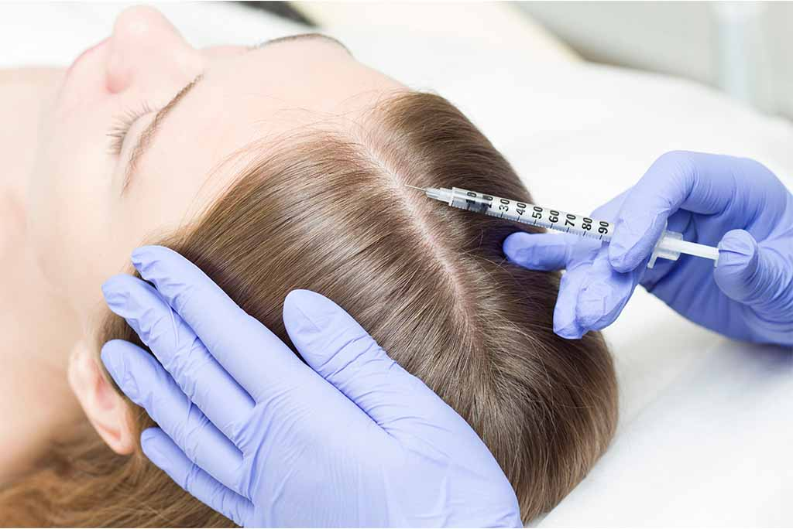
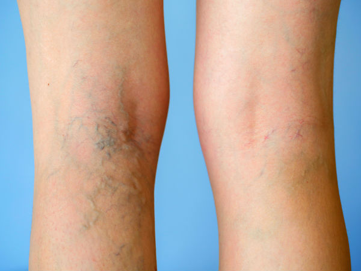

Nossos tratamentos
Dermatologia e Nutrologia para cuidar de você por completo
Dermatologia

Intradermoterapia Capilar
É uma técnica que visa melhorar a saúde do couro cabeludo e promover o crescimento capilar. Ela envolve a aplicação de substâncias diretamente na derme do couro cabeludo, utilizando microagulhas ou dispositivos específicos.
Esse procedimento pode ajudar a aumentar a circulação sanguínea na área, estimular os folículos capilares e melhorar a absorção de nutrientes. Frequentemente utilizado para tratar problemas como a queda de cabelo e a calvície, além de contribuir para a revitalização dos fios.
Saiba mais
Escleroterapia
Utilizada principalmente para tratar vasinhos ou varizes. Durante o tratamento, uma solução esclerosante é injetada diretamente nas veias afetadas, causando uma irritação que leva ao fechamento e eventual reabsorção da veia pelo corpo.
O procedimento é minimamente invasivo e não requer anestesia geral. Os pacientes podem retornar às suas atividades normais rapidamente, embora seja recomendado evitar exercícios intensos por alguns dias.
A escleroterapia é considerada segura e eficaz, mas, como qualquer procedimento médico, pode ter efeitos colaterais, como inchaço ou manchas na pele.
Saiba mais
Remoção de Sinais e Câncer de Pele
Sinais benignos, como verrugas ou nevos (pintas), são geralmente inofensivos e podem ser removidos por razões estéticas ou se causarem desconforto.
Já os sinais malignos, como melanomas ou outros tipos de câncer de pele, requerem remoção para evitar a propagação da doença e são frequentemente seguidos de tratamentos adicionais.
A remoção pode ser feita por diferentes métodos, incluindo excisão cirúrgica, crioterapia ou laser, dependendo da natureza do sinal e da avaliação médica.
Saiba maisNutrologia
Emagrecimento
Programa médico individualizado para perda de peso saudável e sustentável, com acompanhamento nutricional, hormonal e metabólico. Identificamos as causas do ganho de peso e traçamos um plano eficaz para você alcançar seu objetivo com segurança.
Saiba maisCombate à Obesidade
A obesidade é uma doença crônica que exige tratamento médico especializado e multidisciplinar. Na Clínica Janaina Seabra, desenvolvemos protocolos personalizados para controle e reversão da obesidade, cuidando da sua saúde de forma integral.
Saiba maisSaúde Metabólica
Avaliação e tratamento de condições como resistência à insulina, dislipidemia, síndrome metabólica e diabetes. Com uma abordagem integrativa, buscamos equilibrar seu metabolismo e prevenir doenças crônicas, promovendo qualidade de vida a longo prazo.
Saiba maisReposição Hormonal
A reposição hormonal é indicada para tratar sintomas causados pelo desequilíbrio ou deficiência hormonal, como fadiga, ganho de peso, alterações de humor e queda de cabelo. Nosso tratamento é personalizado e monitorado para garantir segurança e bem-estar.
Saiba mais